Table of Contents
Product Segment
Product Segment adalah kode identifikasi produk yang otomatis digunakan pada setiap produk baru di sistem iDempiere. Kode ini biasanya terdiri dari 2–3 karakter dan dikombinasikan dengan nomor urut produk.
Contoh Product Segment
| Kode Segment | Keterangan |
|---|---|
| 10 | Barang Jadi Kemeja |
| 20 | Bahan Baku Knitting |
| 21 | Bahan Baku Woven |
Tanpa Product Segment, sistem hanya menghasilkan nomor urut seperti 0001 atau 0002 yang tidak memberikan informasi mengenai jenis produk. Dengan Product Segment, user dapat langsung mengenali kategori produk hanya dari kode artikel yang ditampilkan.
Manfaat Product Segment
- Mempermudah Identifikasi Produk. Saat jumlah produk mencapai ratusan atau ribuan item, Product Segment membantu user mengenali produk dengan cepat. User cukup melihat awalan kode untuk mengetahui apakah produk tersebut bahan baku, barang setengah jadi, atau barang jadi.
- Menghindari Duplikasi Kode Antar Kategori. Tanpa adanya segment, produk dari kategori berbeda dapat memiliki nomor urut yang sama, misalnya 0001 untuk bahan baku dan 0001 untuk barang jadi. Dengan segment, setiap kode menjadi unik, seperti: RM-0001 dan FG-0001. Kedua kode tersebut berbeda dan tidak saling bertabrakan
- Mendukung Konsistensi Data. Segment yang ditentukan sejak awal implementasi membantu seluruh tim menggunakan pola penamaan yang sama. Dengan begitu, proses pencarian data dan pembuatan laporan menjadi lebih terstruktur dan konsisten.
Sistem akan mengelompokkan kode artikel sesuai kategori yang ditentukan sehingga penyusunan kode artikel menjadi lebih rapi, konsisten, dan mudah dikelola.
Langkah Pengaturan Product Segment Type
- Buka menu SIS Product Segment Type
- Klik New
- Isi Field Search Key dan Name

- Klik Save
Setelah pengelompokan segment berdasarkan kategori selesai dilakukan, lanjutkan konfigurasi pada menu Product Segment.
Langkah Pengaturan Product Segment di Sistem
- Buka Menu SIS Product Segment
- Klik New
- Isi field Search Key, Name dan Product Segment Type. Contoh 10 untuk Barang Jadi dan 59 untuk Brand Polo
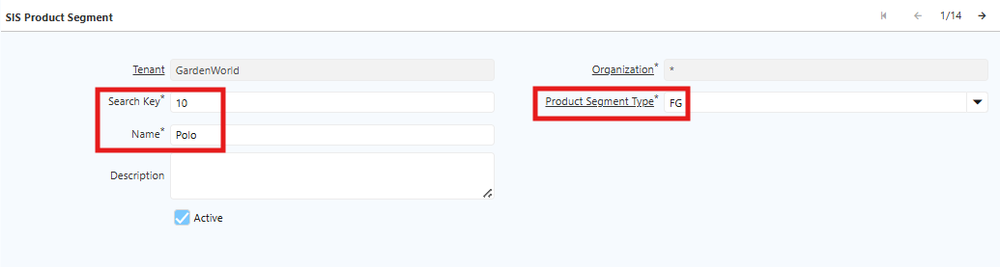
- Klik Save
Setelah Product Segment selesai dikonfigurasi, langkah berikutnya adalah mengatur Item Type. Item Type berfungsi untuk menyusun kode artikel berdasarkan segment yang sudah dibuat.
Item Type Product
Item Type adalah konfigurasi penyusun kode artikel berdasarkan Product Segment yang telah dibuat sebelumnya.
Sistem akan membentuk kode artikel secara otomatis berdasarkan urutan segment pada Item Type.
Contoh Kode Artikel:
| Kode Artikel | Keterangan |
|---|---|
| 1015015971761200 | Barang Jadi Polo |
| 2192G2620000527S6000 | Bahan Baku Woven |
| 20010TR91200660ZP091 | Bahan Baku Knitting |
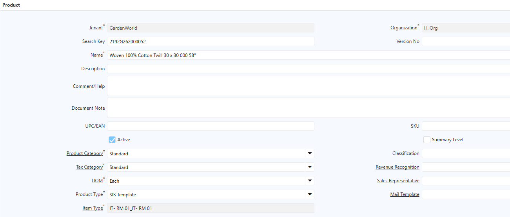
Konfigurasi Item Type
Langkah-Langkah Konfigurasi Item Type:
- Buka Menu SIS Item Type
- Klik New
- Isi field Search Key dan Name sesuai kebutuhan operasional
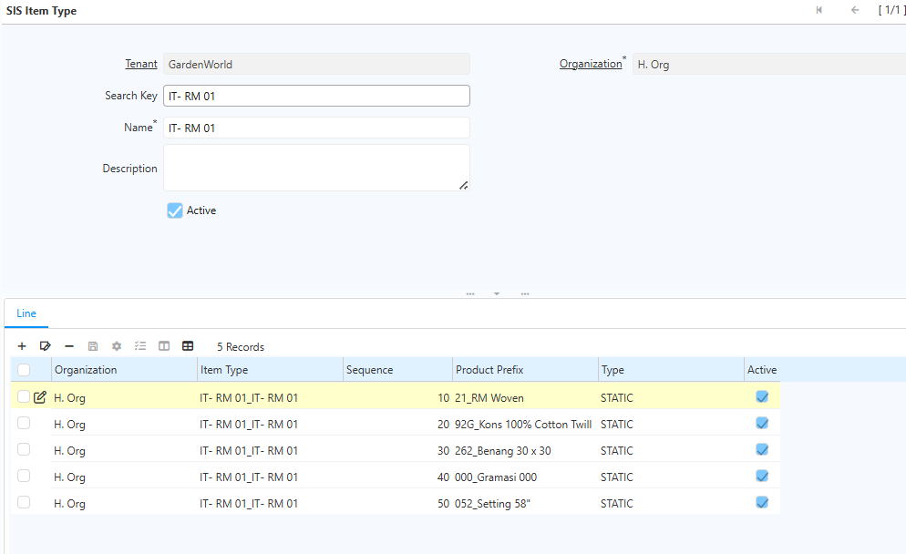
- Masuk ke Item Type Line. Pada bagian Item Type Line, terdapat dua jenis konfigurasi segment, yaitu Sequence (nomor urut otomatis) dan Static (Kode tetap artikel), contoh: 59 untuk Brand Polo, 28 untuk MClass Kemeja). Penggunaan Sequence bersifat opsional dan disesuaikan dengan kebutuhan perusahaan.

- Klik Save
Urutan segment pada Item Type mengikuti standar kode perusahaan karena urutan tersebut menentukan hasil akhir kode artikel.
Setelah Item Type selesai dikonfigurasi, user dapat membuat artikel atau produk baru dengan menghubungkan segment yang telah diatur sebelumnya. Sistem kemudian akan menghasilkan kode artikel secara otomatis.
Implementasi Item Type di Product
Setelah konfigurasi Item Type selesai, langkah berikutnya adalah membuat produk menggunakan segment yang sudah ditentukan.
Langkah Pembuatan Produk dengan Segment
- Buka Menu Product. Pada field Product Type, pilih SIS Template. Setelah itu, field Item Type akan muncul. Pilih Item Type sesuai konfigurasi sebelumnya.

- Klik Save. Saat produk disimpan, sistem otomatis membuat Kode artikel dan Nama produk. Di sistem, kode artikel disebut sebagai Search Key.
Apabila produk memiliki varian, user dapat mengatur varian tersebut pada menu Variant Attribute.

Setelah Variant Attribute selesai dikonfigurasi, user dapat menjalankan proses Generate Product Variant. Sistem akan otomatis membentuk kode artikel berdasarkan template Item Type yang telah dikonfigurasi, kemudian menambahkan kode varian sesuai atribut produk.

Fitur Product Varian
Sistem iDempiere menggunakan Varian Attribute untuk mengelola variasi produk. Dengan fitur ini, perusahaan dapat mengelola satu produk dalam berbagai varian, seperti warna dan ukuran. Fitur Product Varian dapat diterapkan pada semua artikel: Raw Material, Semi Finished Goods, dan Finished Goods.
Konfigurasi Sebelum Menentukan Product Varian
Sebelum membuat produk varian, lakukan tiga konfigurasi berikut:
Master Varian Attribute
Buat Master Varian Attribute terlebih dahulu sebelum menentukan produk varian. Berikut langkah-langkah untuk membuat Varian Attribute:
- Klik menu SIS Varian Attribute
- Isi field Name dengan nama varian yang akan digunakan.

- Buka tab Value, lalu masukkan nama varian dan value sesuai kebutuhan. Contoh: Size S menggunakan prefiks 01. Penentuan varian pada produk disesuaikan dengan kebutuhan operasional perusahaan.
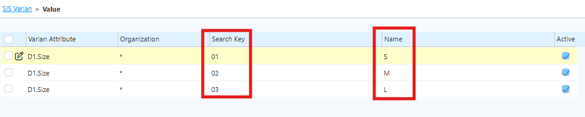
Product Type
Setelah Master Varian Attribute selesai, konfigurasikan Product Type dengan langkah berikut:
- Pada field Product Type, pilih SIS Template sebagai product template
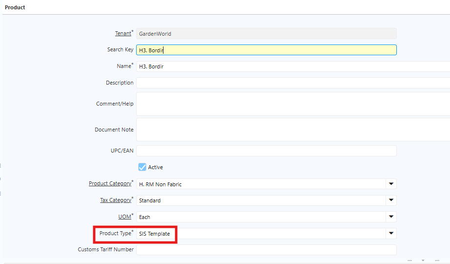
- Buat product template secara berurutan, mulai dari artikel terkecil: Raw Material → Semi Finished Goods → Finished Goods. Pembuatan product template tidak boleh dimulai dari Finished Goods.
- Setelah product template selesai, tambahkan Varian Attribute pada product template untuk membentuk kombinasi varian. Satu produk dapat memiliki lebih dari satu Varian Attribute
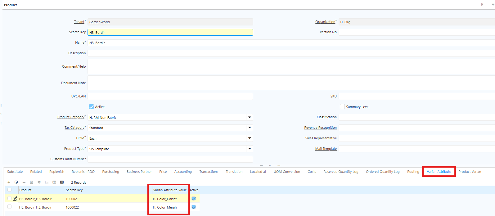
Konfigurasi Sistem
Sistem menyediakan parameter SIS_VARIAN_ALLOW_UPDATE di System Configurator untuk menentukan data mana saja yang akan diperbarui saat Regenerate dijalankan. Berikut parameter yang perlu dikonfigurasi:
| Parameter | Keterangan |
|---|---|
| SIS_VARIAN_ALLOW_UPDATE_BOM | Bill of Material |
| SIS_VARIAN_ALLOW_UPDATE_PURCHASING | Purchasing |
| SIS_VARIAN_ALLOW_UPDATE_REPLENISH | Replenish |
| SIS_VARIAN_ALLOW_UPDATE_REPLENISHRDO | Replenish RDO |
| SIS_VARIAN_ALLOW_UPDATE_ROUTING | Routing |
| SIS_VARIAN_ALLOW_UPDATE_UOMCONVERSION | UoM Conversion |
Salah satu contoh Konfigurasi
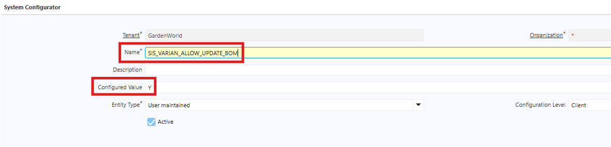
Untuk Configured Value, pilih salah satu:
- Y → Data akan diperbarui secara otomatis saat proses Regenerate Product Variant dijalankan.
- N → Data tidak akan diperbarui saat proses Regenerate dijalankan.
Product Template
Product template merupakan dasar yang digunakan untuk membuat suatu produk. Product template ini tidak hanya berlaku untuk produk Finished Goods, tetapi juga dapat digunakan untuk produk Semi Finished Goods dan Raw Material.
Untuk produk yang memiliki Bill of Material (BoM), kita tidak perlu mengatur varian attribute pada komponen BoM. Sistem akan mencari varian yang sesuai secara otomatis dari product template — dengan syarat varian yang digunakan pada Raw Material, Semi Finished Goods, dan Finished Goods adalah sama.
Apabila produk tidak menggunakan template, masukkan produk varian langsung sebagai komponen di BoM, dan konfigurasikan varian attribute secara detail sesuai penggunaannya.
Generate Product Varian
Setelah Varian Attribute selesai dikonfigurasi, jalankan fitur Generate Product Varian melalui langkah berikut:
- Buka menu Product.
- Klik ikon Setting (⚙).
- Jalankan fitur Generate Product Varian.
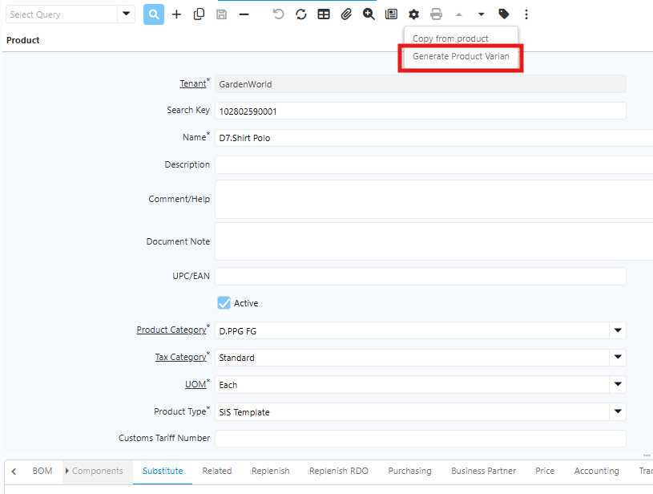
Sistem akan membuat produk varian secara otomatis berdasarkan kombinasi varian yang telah ditentukan, dan menampilkannya pada tab Product Varian. Produk varian yang terbentuk merupakan produk reguler dengan Product Type Item.

Untuk produk Semi Finished Goods dan Finished Goods yang menggunakan Bill of Material, pastikan BoM sudah dikonfigurasi dengan benar sebelum menjalankan Generate Product Varian. Struktur BoM pada product template akan otomatis disalin ke setiap produk varian yang dihasilkan.
Saat proses Generate dijalankan, sistem menyalin informasi berikut dari product template ke setiap product varian:
- Bill of Material
- Purchasing
- Routing
- Replenish
- Replenish RDO
- UoM Conversion

Distribusi komponen bahan di BoM pada setiap produk varian akan menyesuaikan attribute dan konfigurasi BoM yang telah diatur di level template.
Regenerate Product Varian
Regenerate Product Varian adalah proses memperbarui data pada produk varian berdasarkan perubahan yang dilakukan di product template. Apabila ada perubahan pada tab BoM, Purchasing, Routing, Replenish, Replenish RDO, atau UoM Conversion di product template, jalankan proses Regenerate agar perubahan tersebut otomatis diterapkan ke seluruh produk varian terkait.
Setelah Generate Product Varian pertama kali dijalankan, setiap produk varian akan memiliki konfigurasi Allow Update When Regenerate pada tab BoM, Purchasing, Routing, Replenish, Replenish RDO, dan UoM Conversion.
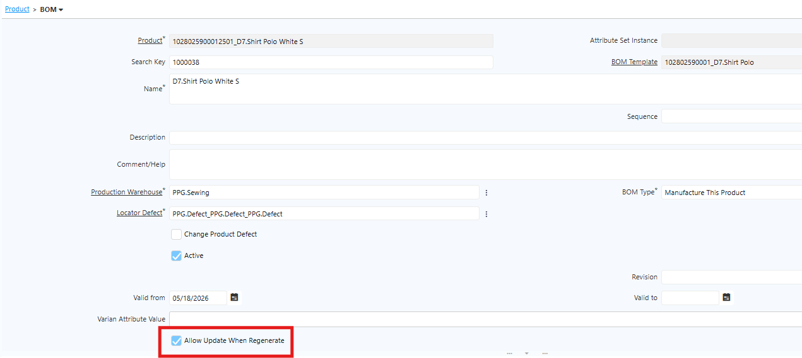
Gunakan konfigurasi ini untuk mengontrol produk varian mana yang perlu diperbarui saat Regenerate dijalankan, tanpa harus mengubah konfigurasi sistem:
- Centang (✔) Allow Update When Regenerate → Data pada tab terkait di produk varian tersebut akan diperbarui saat Regenerate dijalankan.
- Hapus centang (✘) Allow Update When Regenerate → Data pada tab terkait di produk varian tersebut tidak akan diperbarui saat Regenerate dijalankan.
Contoh penggunaan, jika ingin memperbarui BoM di semua produk varian kecuali satu varian tertentu, un-check/un-centang/un-thick Allow Update When Regenerate pada tab BoM di produk varian tersebut sebelum menjalankan Regenerate.
Jika ingin menambahkan raw material atau komponen hanya untuk varian tertentu, input atribut varian pada material baru satu per satu untuk setiap varian. Sistem tidak dapat menerima input beberapa varian yang sama secara bersamaan.
Contoh: Jika ingin menambahkan material Gula untuk varian Coffee dan Matcha, input komponen Gula untuk varian Coffee dan Matcha secara terpisah.
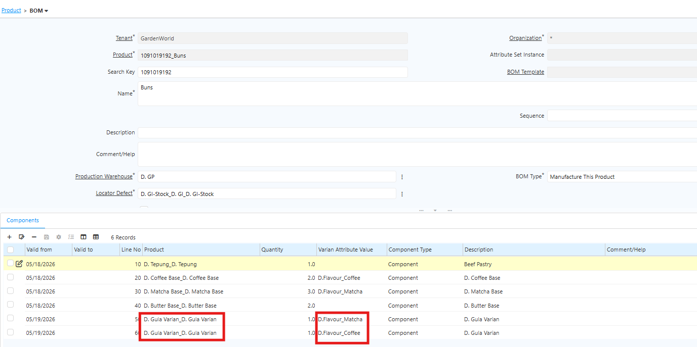
Ketentuan ini juga berlaku jika setiap varian memiliki komponen atau material dengan gramasi, komposisi, atau quantity yang berbeda. Input setiap varian secara terpisah sesuai detail masing-masing.
Unit of Measure (UoM)
Unit of Measure (UoM) adalah satuan pengukuran yang digunakan untuk menentukan kuantitas produk dalam setiap transaksi di iDempiere.
Dalam iDempiere, setiap produk memiliki satu Base UoM, yaitu satuan dasar dan terkecil yang menjadi acuan utama sistem untuk:
- Menyimpan saldo stok di database
- Menghitung harga pokok (costing)
- Menjadi referensi seluruh proses konversi satuan
UoM juga menentukan jumlah produk yang terlibat dalam transaksi. Ketika transaksi menggunakan satuan yang berbeda dari satuan dasar produk, sistem akan melakukan perhitungan berdasarkan konversi UoM yang telah ditentukan.
UoM Conversion
Unit of Measure (UoM) Conversion adalah mekanisme yang digunakan untuk mengonversi satu satuan pengukuran ke satuan lain untuk produk yang sama. Contohnya, produk dibeli dalam satuan karton (10 pcs), disimpan dalam satuan pcs, dan dikeluarkan juga dalam satuan pcs. Dalam kondisi ini, sistem harus memahami hubungan antar satuan tersebut.
UoM Conversion terdiri dari beberapa komponen utama:
- Base UoM, yaitu satuan dasar yang menjadi acuan utama, biasanya satuan terkecil seperti pcs, kg, atau meter.
- Alternate UoM, yaitu satuan lain yang digunakan dalam transaksi, seperti karton, lusin, atau dus.
- Conversion Factor, yaitu nilai pengali antar satuan. Contoh: 1 karton = 10 pcs, sehingga faktor konversinya adalah 10.
Setiap produk memiliki Base UoM sebagai referensi utama seluruh konversi. Sistem mendefinisikan konversi menggunakan multiply rate dan divide rate. Karena itu, Base UoM harus menjadi satuan terkecil dari seluruh skema konversi yang digunakan, dan nilai divide rate harus lebih besar atau sama dengan 1.
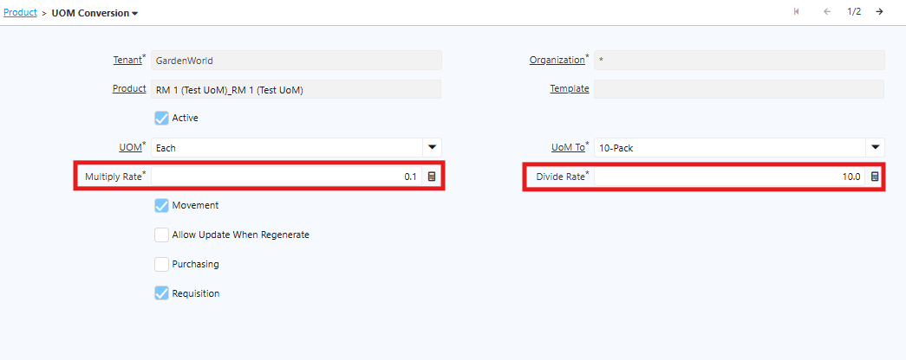
UoM Conversion diterapkan di Requisition, Purchase Order, dan Movement. Karena itu, pastikan konfigurasi UoM di level Product sudah selesai sebelum memulai transaksi di ketiga modul tersebut.
[Tim PSI merekomendasikan untuk menetapkan standarisasi UoM pada proses Movement, Requisition dan Purchasing dengan tujuan untuk meminimalkan potensi kesalahan input UoM serta memastikan akurasi dalam penentuan harga] Catatan
Implementasi di Requisition
Requisition
Di tahap requisition, user mengajukan kebutuhan barang. Fitur UoM Conversion memungkinkan user memasukkan permintaan dalam satuan yang lebih familiar, seperti karton atau pack. Sistem lalu otomatis mengonversi jumlah tersebut ke Base UoM (misalnya Pcs) untuk keperluan pengecekan stok dan perencanaan pengadaan.
Requisition Line

UoM pada requisition line terbentuk dari konversi Base UoM. Berikut field quantity dan harga yang perlu dipahami:
- Quantity — Menampilkan jumlah produk dalam satuan Base UoM.
- Quantity Entered — Menampilkan jumlah produk dalam satuan UoM Conversion. Contoh: Base UoM adalah each dan UoM Conversion adalah pack, di mana 1 pack = 10 each. Maka Quantity Entered mencerminkan jumlah dalam satuan pack.
Generate PO From Requisition
Setelah requisition diconfirm (complete), langkah berikutnya adalah Generate PO From Requisition. Proses ini menyalin data dari requisition — termasuk UoM dan quantity — ke dalam Purchase Order. Sistem kemudian menggunakan UoM yang telah dikonversi sebelumnya.
UoM yang digunakan di requisition dan purchase order sebenarnya bisa berbeda, namun disarankan untuk menyamakannya demi konsistensi data. Contoh: jika requisition menggunakan satuan pack, maka purchase order sebaiknya juga menggunakan pack.
Implementasi di Purchase Order
Setelah requisition dikonfirmasi, user membuat Purchase Order melalui proses “Generate PO From Requisition”. Sistem membaca requisition line yang memenuhi kriteria tertentu — seperti Warehouse dan Business Partner — lalu membuat Purchase Order secara otomatis.
Sistem mengambil data berikut dari dokumen Requisition ke header Purchase Order:
- Organization
- Date Promised
- Price List
- Warehouse
- Business Partner

Purchase Order Line
Dalam Purchase Order, sistem menggunakan satuan pembelian yang telah disepakati dengan vendor, yang biasanya berbeda dari Base UoM. Sistem mencatat:
- Quantity dalam satuan UoM Conversion (misalnya karton)
- Harga per satuan UoM Conversion (misalnya Rp100.000/karton)
- Konversi ke Base UoM secara otomatis di latar belakang
Hal ini penting karena vendor umumnya memberikan harga dalam satuan karton atau dus, bukan per pcs.

Berdasarkan data konversi tersebut, sistem menghitung unit cost dalam Base UoM. Contoh: harga Rp120.000 per karton dengan isi 10 pcs akan dikonversi menjadi Rp12.000 per pcs untuk keperluan valuasi inventori.
Berikut field pada Purchase Order line yang perlu dipahami:
- Qty Entered — Menampilkan jumlah produk dalam satuan UoM Conversion. Nilai ini otomatis menyesuaikan rate UoM Conversion.
- PO Quantity — Menampilkan jumlah produk dalam satuan Base UoM. Nilai ini otomatis menyesuaikan rate UoM Conversion.
- Unit Price — Menampilkan harga produk per satuan Base UoM, mengikuti price yang telah dikonfigurasi di level Business Partner.
- Price — Menampilkan harga produk per satuan UoM Conversion, dihitung berdasarkan rate UoM Conversion.
Penentuan Price
Price pada Purchase Order ditentukan berdasarkan vendor atau business partner yang dikontrak. Konfigurasi price dilakukan di level Business Partner, karena setiap business partner dapat memiliki price list yang berbeda.
Jika produk tidak memiliki vendor yang dikontrak, sistem menggunakan Price List yang telah dikonfigurasi sebelumnya. Penentuan dasar harga yang digunakan mengikuti kebijakan perusahaan.
Implementasi di Movement
Penerimaan Barang & Konfigurasi UoM
Setelah produk jadi diterima, perpindahan stok (antar gudang, antar lokasi) dicatat melalui Inventory Move. Sistem mencatat quantity berdasarkan konfigurasi UoM yang diatur di level Product. Konfigurasi ini tersedia di tab “UoM Conversion” pada halaman Product.
Field “Movement”
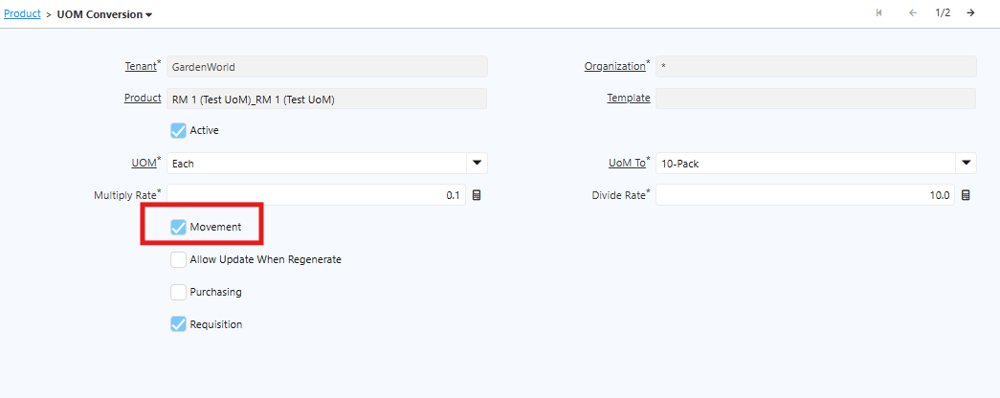
Field Movement menentukan bagaimana sistem mencatat quantity saat penerimaan barang:
- Jika Movement dicentang (✓) — Sistem mencatat quantity dalam satuan UoM Conversion (hasil konversi dari Base UoM).
- Jika Movement tidak dicentang — Sistem mencatat quantity langsung menggunakan satuan Base UoM.
Implementasi UoM Conversion di Movement
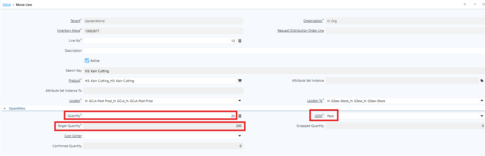
UoM yang digunakan di level Movement mengikuti konfigurasi UoM Conversion pada level Product. Jika field Is Movement dicentang, sistem akan mencatat transaksi movement dalam satuan UoM Conversion, termasuk quantity yang digunakan. Berikut field pada movement line yang perlu dipahami:
- Quantity — Menampilkan jumlah produk dalam satuan UoM Conversion.
- Target Quantity — Menampilkan jumlah produk dalam satuan Base UoM. Contoh: jika Base UoM adalah each dan UoM Conversion adalah pack, maka 1 pack = 10 each.
- UoM — Menampilkan UoM sesuai konfigurasi di level Product.
Contoh: Movement Menggunakan Base UoM
Konfigurasi di level Product
Di level Movement
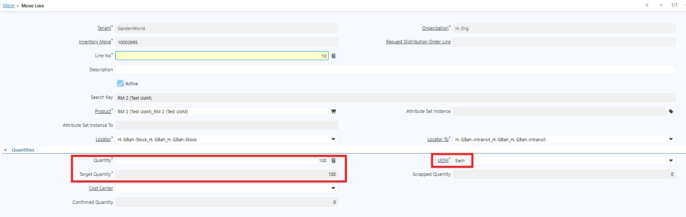
Karena field Movement tidak dicentang, sistem mencatat movement dalam satuan Base UoM.
Routing
Routing adalah konfigurasi yang menentukan alur proses suatu produk, mulai dari bahan baku, tahapan produksi, hingga menjadi produk jadi. Routing juga mengatur lokasi setiap proses dijalankan dan lokasi penyimpanan hasil proses tersebut.
Tanpa routing, proses produksi tetap dapat berjalan, tetapi perpindahan stok tidak tercatat secara otomatis dan alurnya menjadi tidak terstruktur. Kondisi ini dapat menyebabkan bahan baku tersimpan di lokasi yang salah dan hasil produksi tidak tercatat dengan benar.
Pengaturan Warehouse & Locator
Sebelum membuat routing, pastikan konfigurasi Warehouse dan Locator sudah sesuai.
Warehouse merepresentasikan area penyimpanan fisik produk atau gudang. Di dalam warehouse terdapat struktur lokasi yang disebut Locator untuk menentukan posisi penyimpanan secara lebih detail, seperti rak, baris, atau bin.
Langkah Pengaturan Warehouse & Locator
- Buka Menu Warehouse & Locator
- Klik New
- Isi data Warehouse:
- Nama Warehouse, contoh: WH-Bahan Baku
- Alamat Warehouse, contoh: Jakarta
Di dalam warehouse terdapat line bernama Locator. Locator harus dibuat terlebih dahulu sebelum digunakan pada routing. Ikuti langkah dibawah untuk mengatur locator:
- Klik tab Line Locator
- Klik New
- Isi nama locator gudang
- Isi field X, Y, Z sesuai kebutuhan operasional:
- X untuk kolom rak
- Y untuk baris rak
- Z untuk slot dalam satu baris
- Centang Default untuk locator utama gudang
- Isi field berikut sesuai locator yang digunakan
- Locator Stock
- Locator Pre Manufacture
- Locator Post Manufacture
- Reservation Locator
- Klik Save
Jika satu produk diproduksi di lebih dari satu gudang, misalnya Jakarta dan Surabaya, buat konfigurasi BoM (Bill of Material) terpisah sesuai lokasi produksi masing-masing. Routing nantinya akan mengikuti konfigurasi BoM tersebut.
Jenis Action Routing
Routing memiliki beberapa jenis action yang digunakan untuk menentukan alur perpindahan barang.
| Action | Fungsi |
|---|---|
| Buy | Proses pengadaan material melalui pembelian |
| Manufacture | Proses memproduksi artikel |
| Pull From | Menarik barang dari gudang sebelumnya (alur mundur) |
| Push To | Mengirim barang ke gudang berikutnya (alur maju) |
Penggunaan Action Berdasarkan Jenis Produk
- Raw Material dan Semi Finished Goods. Menggunakan action Pull From, dimulai dari proses pembelian atau proses sebelumnya hingga ke area pre-production.
- Finished Goods. Menggunakan action Push To dengan tujuan gudang induk atau gudang penjualan.
Jenis Operation Routing
Routing memiliki tiga jenis operation:
| Operation Type | Fungsi |
|---|---|
| Take from stock | Mengambil langsung dari stok yang tersedia |
| Take from stock Trigger another rules | Mengambil dari stok, lalu menjalankan aturan lain jika stok tidak mencukupi |
| Trigger another rules | Langsung menjalankan aturan lain tanpa pengecekan stok |
Langkah Pengaturan Routing di Sistem
- Buka Menu SIS Routing
- Klik New
- Isi Field Search Key dan Nama pada Header
- Simpan header terlebih dahulu sebelum menambahkan line routing
- Klik tab Line
- Isi setiap field sesuai konfigurasi berikut:

Berikut field yang harus dikonfigurasi:
| Field | Keterangan |
|---|---|
| Routing Action | Aksi yang dijalankan sistem pada tahap tertentu |
| Warehouse | Gudang asal material atau komponen |
| Locator | Lokasi pengambilan material atau komponen |
| Operation Type | Jenis operasi yang menentukan logika proses |
| Warehouse To | Gudang tujuan hasil produksi |
| Locator To | Lokasi penyimpanan hasil produksi |
- Ulangi untuk setiap tahapan proses dan pastikan Line No berurutan
- Simpan setiap line sebelum menambahkan ke line berikutnya
- Klik Save
Implementasi Routing
Setiap jenis produk, seperti Raw Material, Semi Finished Goods, dan Finished Goods, umumnya memiliki routing yang berbeda karena proses produksinya dilakukan di warehouse yang berbeda.
Sebelum menjalankan produksi, lakukan konfigurasi routing pada level Product Category. Pastikan routing setiap produk sudah sesuai dengan alur produksi yang berlaku.
Satu routing dapat digunakan untuk beberapa produk selama proses produksi dan perpindahan barang menggunakan warehouse serta locator yang sama.
Langkah Implementasi Routing di Product Category
- Buka Menu Product Category
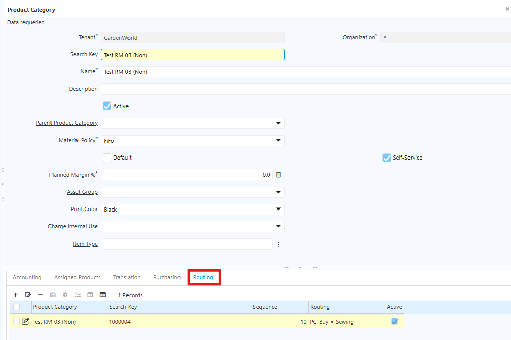
- Pada Tab Routing, lakukan konfigurasi sesuai dengan alur produksi.
- Klik Save
Routing juga dapat dikonfigurasi langsung pada level produk. Berikut langkah implementasi routing di Product:
- Buka Menu Product
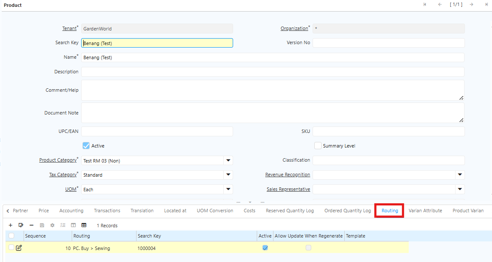
- Pada Tab Routing, konfigurasi sesuai dengan alur produksi.
- Klik Save
Manufacturing Order
Manufacturing Order adalah dokumen perintah produksi yang terhubung langsung dengan routing.
Saat manufacturing order dibuat, sistem akan membaca routing dan otomatis menyiapkan seluruh tahapan operasi sesuai urutan proses produksi.
Ketika Production Order Planning dibuat, sistem otomatis menghasilkan manufacturing order berdasarkan urutan operasi yang sudah dikonfigurasi. Dengan routing yang tepat:
- Perpindahan stok tidak perlu dilakukan secara manual.
- Lokasi barang dapat dipantau secara real-time.
- Sistem mencatat seluruh perpindahan produk secara otomatis.
- Laporan produksi menjadi lebih akurat karena setiap proses tercatat di sistem.
Bill of Material
Bill of Material (BoM) adalah struktur daftar komponen atau bahan yang digunakan untuk memproduksi suatu produk. BoM digunakan pada Manufacturing dan Production untuk mendukung proses produksi.
Bill of Material berfungsi untuk:
- Menentukan komponen penyusun produk
- Menghitung kebutuhan bahan baku
- Mendukung proses produksi
- Menghitung biaya produksi
Satu produk dapat memiliki lebih dari satu BoM sesuai kebutuhan produksi.
Konfigurasi Bill of Material
Beberapa pengaturan yang perlu dikonfigurasi pada BoM:
- Type BoM
- Manufacturing Produt → Produksi dilakukan secara inhouse oleh perusahaan
- Subcontracting → Produksi dilakukan di luar perusahaan melalui vendor
- Component. Komponen atau material yang digunakan dalam proses produksi.
- BoM Reference. BoM referensi yang digunakan untuk artikel Semi Finished Goods yang memiliki struktur BoM dan komponen tersendiri.
- Valid from. Periode mulai berlakunya BoM untuk produk tersebut.
Contoh Bill of Material
| Finished Goods | Komponen | Qty |
|---|---|---|
| Kemeja | Kain Cutting | 2 |
| Kemeja | Label | 1 |
| Kemeja | Kancing | 4 |
Artinya, untuk memproduksi 1 pcs Kemeja dibutuhkan:
- 2 pcs Kain Cutting
- 1 pcs Label
- 4 pcs Kancing
Manufacturing Order
Manufacturing Order adalah dokumen proses produksi untuk menghasilkan barang jadi maupun barang setengah jadi. Manufacturing Order merupakan bagian dari proses Production Order Planning (POP).
Urutan Manufacturing Order mengikuti struktur Semi Finished Goods terkecil berdasarkan hierarki BoM.
Tab pada Manufacturing Order
- Manufacturing Order Line. Berisi daftar kebutuhan bahan baku yang digunakan dalam produksi.
- Movement/Inventory Move. Dokumen perpindahan material sebagai permintaan bahan produksi. Dokumen ini bukan surat jalan.
- Requisition. Dokumen permohonan pembelian material. Requisition hanya muncul jika stok material tidak mencukupi. Jika stok tersedia, proses dapat langsung dilanjutkan ke tahap movement.
- Production. Digunakan untuk menjalankan proses produksi artikel.
- Childs. Berisi Child Manufacturing Order yang terbentuk dari komponen Semi Finished Goods.
- Production Report Quantity. Digunakan untuk mencatat hasil produksi, baik produk baik maupun produk defect.
Child Manufacturing Order
Satu Manufacturing Order dapat memiliki beberapa Child MO apabila dalam BoM terdapat komponen Semi Finished Goods.
Proses produksi tidak dapat dilanjutkan jika material pada Child Manufacturing Order belum tersedia.
Production Order Planning
Production Order Planning (POP) adalah dasar perencanaan produksi yang digunakan untuk menentukan produk yang akan diproduksi.
Dalam satu POP, user dapat memproduksi beberapa produk atau beberapa line sekaligus. POP mengacu pada master data produk dan routing. Maka dari itu, routing harus dikonfigurasi terlebih dahulu sebelum membuat POP.
Fungsi Production Order Planning
Dalam satu POP line, sistem dapat menghasilkan beberapa Manufacturing Order tergantung jumlah dan jenis produk.
POP juga berfungsi untuk:
- Menghitung kebutuhan bahan baku
- Menyiapkan inventory movement
- Menjadi dasar penarikan material dari gudang ke area produksi
Langkah Production Order Planning di Sistem
- Buka menu SIS Production Order Planning
- Masuk ke Tab Line
- Input:
- Produk yang akan diproduksi
- Quantity produksi
- BoM yang digunakan
- Jalankan proses SIS Generate POP BoM. Sistem akan menampilkan struktur BoM produk tersebut.

5. Klik SIS Generate MO. Sistem akan membuat Manufacturing Order secara otomatis.

- Masuk ke menu Manufacturing Order. Setelah proses Generate MO selesai, sistem otomatis membuat dokumen berikut:
- Back Order
- Movement
- Requisition
- Production
- Child
- Production Report Quantity
Dokumen Requisition hanya muncul jika stok material tidak mencukupi.
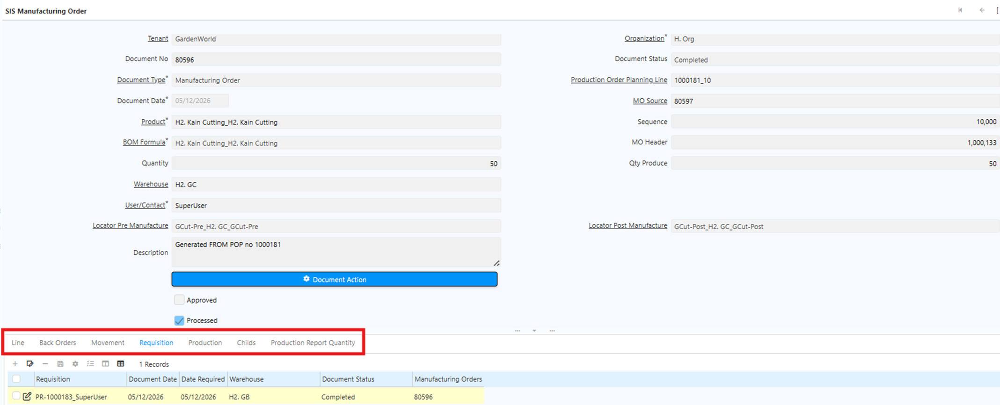
- Lakukan proses requisition untuk komponen raw material yang dibutuhkan. Alur proses:
- Requisition Complete
- Purchase Order Complete
- Material Receipt
- Klik Tab Movement dan lakukan movement sesuai urutan proses
- Setelah movement selesai dan stok tersedia, jalankan proses produksi pada tab Production Report Quantity:
- Isi quantity produksi
- Jika terdapat produk defect, isi quantity defect
- Centang field Defect untuk produk defect
Produk defect akan diproses movement manual ke locator sesuai konfigurasi pada BoM.

- Setelah quantity ditentukan, lakukan Complete Document MO. Sistem akan menjalankan proses production secara otomatis di belakang layar dan mengkonsumsi Raw Material dan Semi Finished Goods

Production Order Planning Subcon
Subcon atau CMT adalah ketika salah satu komponen Finished Goods diproduksi di luar perusahaan oleh vendor.
Dalam proses ini:
- Perusahaan mengirim material ke vendor
- Vendor memproduksi barang setengah jadi atau barang jadi
- Perusahaan melakukan proses pembelian hasil produksi vendor melalui:
- Requisition
- Purchase Order
- Material Receipt
Mekanisme POP Subcon
Jika Finished Goods memiliki komponen subcon, maka Manufacturing Order yang terbentuk hanya satu, yaitu untuk Finished Goods.
Namun, ketika Purchase Order untuk produk subcon selesai diproses, sistem dapat otomatis membuat POP baru untuk Semi Finished Goods yang masih diproduksi secara inhouse.
Setelah produksi Semi Finished Goods selesai dan stok tersedia di warehouse, proses produksi Finished Goods dapat dilanjutkan.
Langkah POP Subcon di Sistem
- Buka menu SIS Production Order Planning
- Masuk ke Tab Line
- Input:
- Produk yang akan diproduksi
- Quantity produksi
- BoM yang digunakan
- Jalankan proses SIS Generate POP BoM
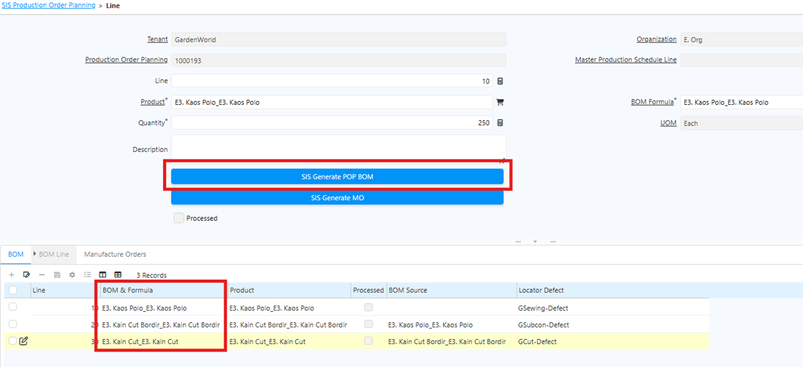
- Klik SIS Generate MO
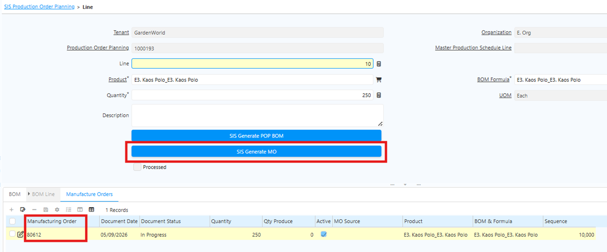
6. Masuk ke menu Manufacturing Order. Setelah proses Generate MO selesai, sistem otomatis membuat dokumen berikut Back Order, Movement, Requisition, Production, Child dan Production Report Quantity.
- Lakukan proses Requisition untuk material subcon. Alur proses:
- Requisition Complete
- Purchase Order Complete
- Material Receipt
Sistem akan membuat POP baru untuk Semi Finished Goods yang diproduksi secara inhouse.

- Jalankan proses produksi Semi Finished Goods hingga selesai
- Setelah Semi Finished Goods tersedia di Warehouse, lakukan Movement sesuai urutan proses
- Klik tab Movement dan lakukan movement sesuai urutan
- Setelah stok tersedia, jalankan proses produksi pada tab Production Report Quantity:
- Isi quantity produksi
- Isi quantity defect, jika ada
- Centang field Defect untuk produk defect
Produk defect akan diproses movement manual ke locator sesuai konfigurasi BoM.
- Setelah quantity ditentukan, lakukan Complete Document MO. Sistem akan menjalankan proses production secara otomatis dan mengkonsumsi:
- Raw Material
- Semi Finished Goods
Pelita POP Visual Data
Pelita POP Visual Data adalah fitur visualisasi yang menampilkan setiap tahapan Production Order Planning (POP) — mulai dari penentuan artikel yang akan diproduksi hingga artikel selesai diproduksi. Fitur ini memudahkan pemantauan progress produksi sekaligus memungkinkan generate dokumen di masing-masing tahapan.
Langkah Akses Pelita POP Visual Data
- Buka menu Pelita POP Visual Data
- Input nomor POP di field POP Document No
- Klik Visual It
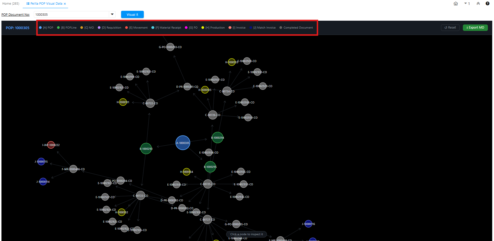
Sistem menampilkan visualisasi Production Order Planning yang dipilih. Setiap tahapan produksi dibedakan menggunakan kodefikasi A–J dengan warna yang berbeda, sehingga progress produksi dapat dipantau secara langsung.
Ketentuan Visualisasi
Berikut ketentuan perubahan warna pada visualisasi:
- Abu-abu — Dokumen sudah di-complete (berlaku untuk Movement, MO, Requisition, PO, dan MR).
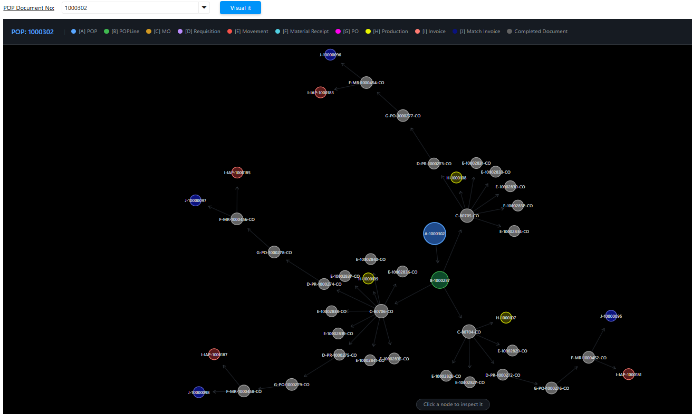
- Warna sesuai konfigurasi — Dokumen belum di-complete (berlaku untuk Movement, MO, Requisition, PO, dan MR).
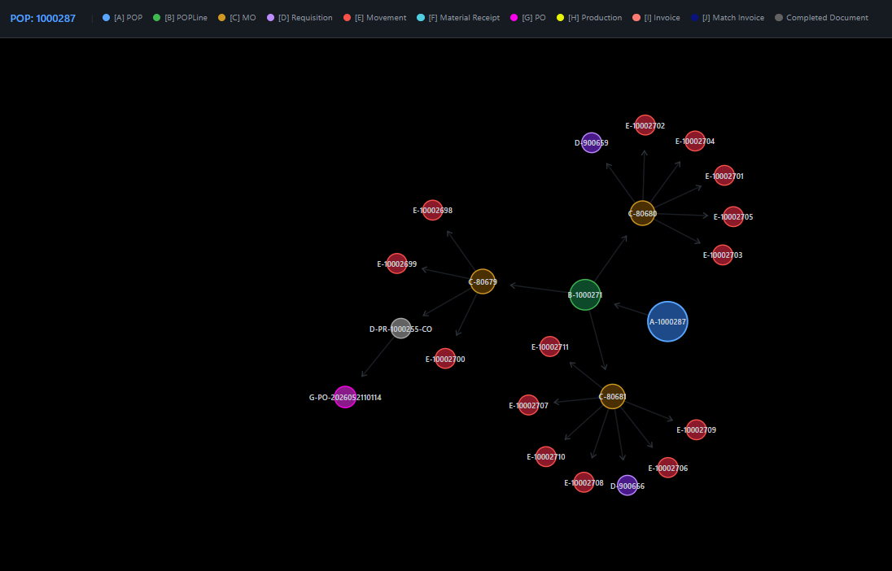
Untuk dokumen selain Movement, MO, Requisition, PO, dan MR, warna pada visualisasi tidak berubah — baik saat status dokumen masih draft maupun sudah complete.
Berikut interaksi yang tersedia pada visualisasi:
- Klik satu kali pada salah satu tahapan untuk melihat detail, termasuk dokumen masuk (incoming) dan dokumen keluar (outgoing).
- Klik dua kali pada node untuk membuka menu terkait. Contoh: klik dua kali pada node A akan membuka menu POP.
- Sorot salah satu tahapan untuk melihat informasi dokumen beserta keterkaitannya.
Master Production Schedule
Master Production Schedule (MPS) adalah rencana produksi utama yang menentukan produk apa yang akan diproduksi, kapan diproduksi dan berapa jumlah yang diproduksi.
Master Production Schedule (MPS) ini menjadi penghubung antara forecast permintaan, sales order, kapasitas produksi dan kebutuhan material.
Fungsi adanya MPS di sistem iDempiere adalah untuk:
- Menjadwalkan produksi finished goods
- Menentukan target produksi per periode
- Mengontrol kapasitas produksi
- Menghindari overstock maupun kekurangan stock
Konfigurasi Sebelum Proses MPS
Sebelum menjalankan proses Master Production Schedule, pastikan beberapa hal berikut sudah disiapkan:
- Template CSV sebagai sumber data produksi
- Product yang akan dijadwalkan produksinya
- Date schedule sebagai acuan tanggal rencana produksi

Konfigurasi Document MPS
Sebelum menjalankan proses Generate MPS, lakukan konfigurasi Document Type MPS terlebih dahulu.
- Nama Document Type MPS
- Document Base MPS
- Document Type POP, dibedakan menjadi 2, yaitu:
- POP 1 → Non System 01
- POP 2 → System 01
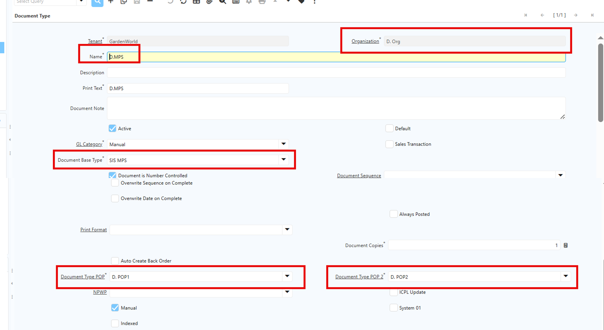
Langkah Proses Master Production Schedule
- Buka menu Generate MPS
- Pilih organisasi yang akan digunakan
- Pilih file CSV sebagai sumber data produksi
- Tentukan nilai Distribute (%) untuk mengatur distribusi produksi antara:
- Non System 01
- System 01
Sisa persentase dari distribusi Non System 01 akan otomatis dialokasikan ke System 01.

5. Jalankan proses Generate MPS.
- Setelah proses berhasil, sistem akan membentuk dokumen MPS berdasarkan:
- Tanggal produksi
- Quantity produk
- Mapping data pada file CSV

7. Setelah dokumen MPS di-Complete, sistem otomatis membentuk: POP 1 dan POP 2
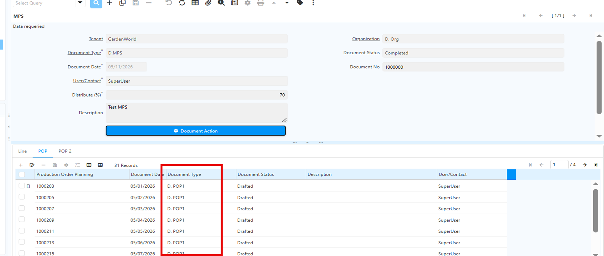
- Document Date pada POP yang terbentuk akan mengikuti Date Schedule yang telah ditentukan sebelumnya.
- Dokumen POP yang terbentuk memiliki status Draft dan dapat di-Complete secara manual sesuai kebutuhan
Proses MPS akan menghasilkan dua dokumen Production Order Planning (POP):
- POP 1 → untuk pendistribusian Non System 01
- POP 2 → untuk pendistribusian System 01
Request Distribution Order
Request Distribution Order (RDO) adalah instrumen pengendalian distribusi yang digunakan untuk memonitor, mengalokasikan, dan mendistribusikan barang non-produksi ke warehouse tujuan secara terstruktur dan dapat ditelusuri.
Konfigurasi Request Distribution Order (RDO)
Sebelum proses RDO dijalankan, pastikan konfigurasi berikut sudah diselesaikan:
- Warehouse dan Locator tujuan sudah didefinisikan dengan jelas.
- Document Type untuk delivery dan receipt sudah dikonfigurasi agar sistem dapat mencatat pergerakan barang secara akurat.
- Produk yang akan didistribusikan sudah diinput melalui menu Product Access menggunakan fitur Generate Product.
- Field Organization wajib diisi pada seluruh transaksi operasional untuk menjaga integritas data.
Konfigurasi Document Type RDO
Pada konfigurasi Document Type RDO, terdapat beberapa field utama yang wajib diisi:
| Field | Keterangan |
|---|---|
| Document type delivery | Digunakan untuk mencatat barang keluar dari warehouse asal |
| Document type receipt | Digunakan untuk mencatat penerimaan barang di warehouse tujuan |
| Warehouse intransit | Warehouse transit selama proses distribusi |
| Locator Tujuan | Lokasi penerimaan barang |
| Product Access | Wajib dicentang agar filter produk berjalan sesuai konfigurasi |
Alur Proses Request Distribution Order di Sistem
- Lakukan assign produk melalui fitur Generate Product pada menu Product Access.
- Buka menu Request Distribution Order (RDO).

3. Jalankan proses Generate RDO Line untuk menampilkan daftar produk yang sudah dikonfigurasi.
- Pilih produk yang akan didistribusikan sesuai kebutuhan.
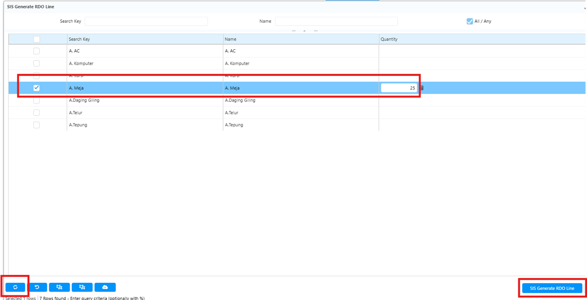
Validasi quantity distribusi.
Klik Complete Document untuk menyelesaikan proses RDO.
Setelah dokumen di-complete, sistem akan otomatis membuat dokumen:
- Inventory Move Delivery
- Inventory Move Receipt
Kedua dokumen tersebut akan terbentuk dalam status Draft dan perlu diproses lebih lanjut sesuai alur operasional.
Back Order Pada RDO
Jika quantity distribusi yang diproses lebih kecil dari quantity permintaan, sistem akan otomatis membuat Back Order untuk sisa quantity yang belum terpenuhi.
Dengan mekanisme ini, proses distribusi tetap dapat dilanjutkan tanpa harus membuat dokumen baru secara manual.
ICPL
ICPL atau Price List adalah fitur untuk mengelola dan menyimpan informasi harga jual maupun harga beli produk. Dengan ICPL, perusahaan dapat menetapkan harga yang berbeda untuk setiap pelanggan atau vendor dalam periode tertentu.
ICPL menjadi dasar perhitungan harga pada setiap transaksi. Sistem hanya dapat mengisi harga otomatis pada Sales Order maupun Purchase Order jika price list sudah dikonfigurasi dengan benar.
Manfaat ICPL
- Menstandarkan harga produk secara terpusat sehingga user tidak perlu menginput harga secara manual pada setiap transaksi.
- Mendukung beberapa jenis harga, seperti retail, grosir, dan distributor dalam satu sistem.
- Menyimpan histori perubahan harga sebagai versi baru.
- Menghitung diskon atau markup secara otomatis berdasarkan produk atau kategori.
Pengaturan ICPL Base
Membuat ICPL Base
Ikuti langkah berikut untuk membuat ICPL Base:
- Buka Menu SIS ICPL
- Klik New
- Isi semua field
- ICPL Type. Tentukan jenis harga yang digunakan, seperti online, offline, intercompany, atau stock opname.
- Price include tax. Tentukan apakah harga sudah termasuk pajak.
- Valid from. Tentukan tanggal mulai berlaku harga.
- Sales transaction. Aktifkan jika ICPL digunakan untuk transaksi penjualan.
- Set lucky number. Opsional, jika diperlukan untuk perhitungan tambahan dapat diaktifkan.
- Calculate type. Tentukan metode perhitungan seperti Add (+), Subtract (-), Multiply (*) atau Divide (/)
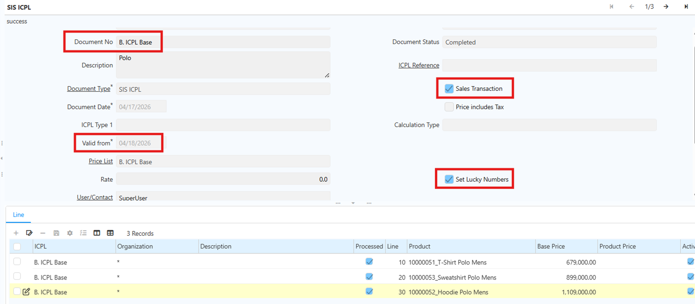
- Klik Save
Menambahkan Produk ke ICPL Base
Setelah header ICPL tersimpan, tambahkan daftar harga produk melalui tab Line.
- Buka tab Line
- Klik tombol New
- Pilih Product
- Input Base Price produk
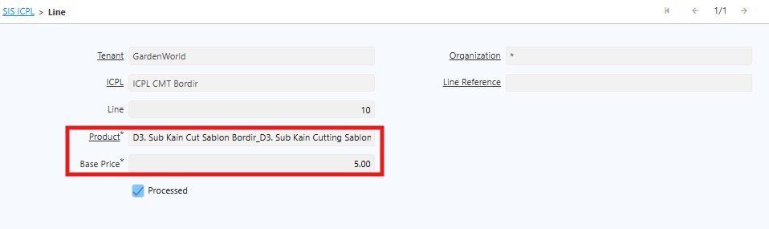
- Klik save
- Ulangi langkah di atas untuk seluruh produk
- Klik complete
- Jalankan proses Generate PLV (Price List Version).
- Sistem akan menyimpan data header dan menyiapkan versi harga.
ICPL With Reference
ICPL With Reference digunakan untuk membuat versi harga baru berdasarkan ICPL Base yang sudah ada. Sistem akan menghitung harga secara otomatis berdasarkan referensi yang dipilih.
Membuat ICPL with Reference
- Buka Menu SIS ICPL
- Klik New
- Isi seluruh field
- Pada field ICPL Reference, pilih ICPL Base yang akan dijadikan acuan.
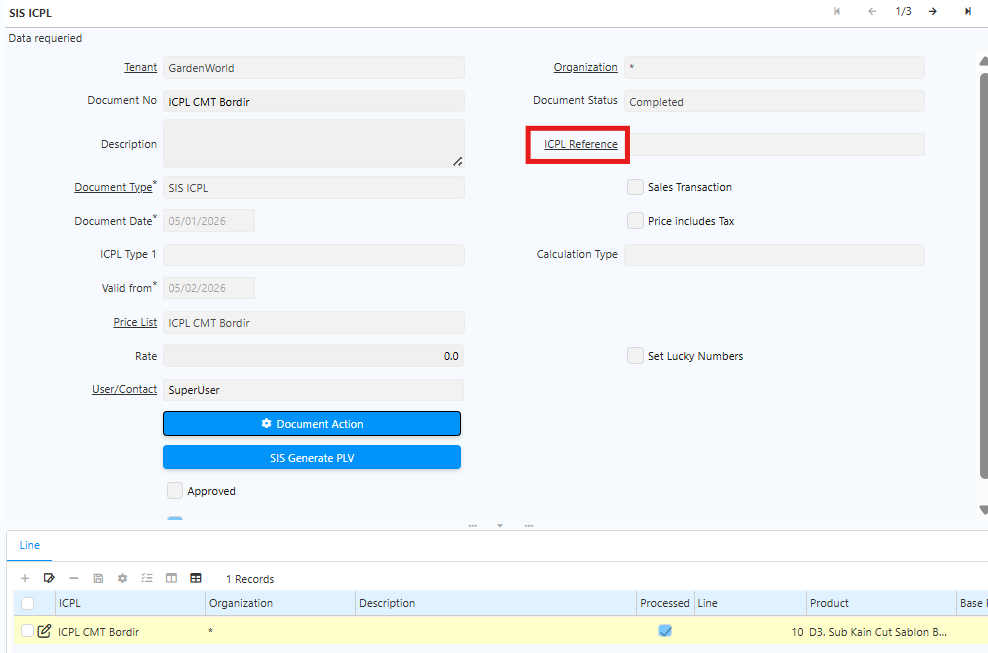
- Klik save
- Klik complete
- Jalankan proses Generate PLV (Price List Version).
- Sistem akan menampilkan produk beserta harga yang dihitung otomatis berdasarkan harga ICPL Base + (Rate %)
User tidak perlu membuat ICPL Line secara manual karena sistem akan membuat data otomatis saat proses Generate PLV dijalankan. ICPL With Reference juga dapat digunakan sebagai referensi untuk ICPL turunan lainnya.
Update ICPL
Perubahan ICPL hanya dapat dilakukan melalui menu ICPL Update. User tidak dapat mengubah langsung dokumen ICPL dengan status Complete. Hanya ICPL Base yang dapat diperbarui.
Langkah Update ICPL
- Buka menu SIS ICPL Update
- Pilih ICPL Base yang akan diperbarui.
- Input tanggal baru pada field Valid From
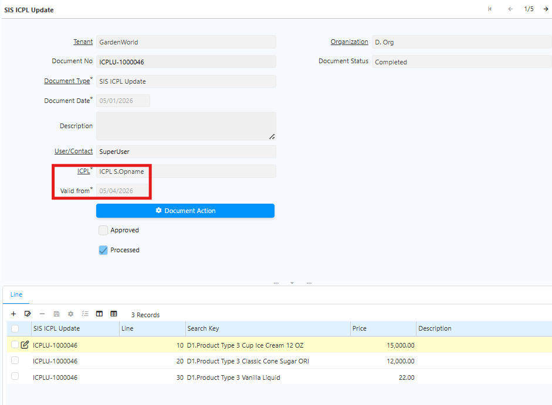
- Masuk ke tab Line
- Pilih Produk
- Input Price terbaru

- Klik save
- Klik complete
Saat ICPL Base diperbarui, seluruh ICPL turunan akan ikut ter-update secara otomatis.
Implementasi ICPL
ICPL Pada Warehouse
Setiap warehouse atau outlet harus memiliki ICPL yang digunakan dalam transaksi. Satu warehouse dapat memiliki 4 jenis ICPL:
- ICPL Online
- ICPL Offline
- ICPL Intercompany
- ICPL Stock Opname
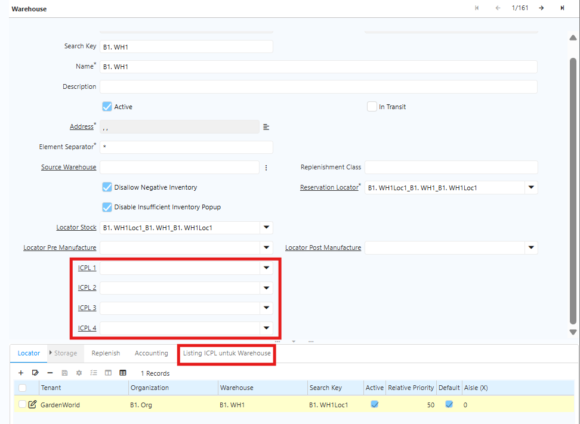
Selain itu, menu Warehouse & Locator memiliki tab Listing ICPL for Warehouse untuk menampilkan histori perubahan harga. Jika tidak ada perubahan harga, tab tersebut tidak akan menampilkan data.
ICPL Pada Purchase Order
ICPL dapat digunakan untuk menentukan harga pembelian dari vendor. Setiap vendor dapat memiliki price list yang berbeda sesuai kesepakatan harga atau kontrak pembelian. Satu vendor hanya dapat menggunakan satu ICPL Purchase.
Setup ICPL Purchase pada Vendor
- Buka menu Business Partner
- Masuk ke bagian Vendor Information.
- Isi field Purchase Price List dengan ICPL yang digunakan.

4. Klik save
Setelah ICPL Purchase dikonfigurasi, sistem akan otomatis menampilkan harga pada transaksi Purchase Order sesuai price list vendor yang dipilih.
Cost of Production
Cost of Production adalah biaya yang dikeluarkan untuk memproduksi barang. Biaya ini mencakup bahan baku, tenaga kerja, dan biaya overhead produksi.
Di iDempiere, Cost of Production terdiri dari tiga elemen utama:
- Biaya Bahan Baku Langsung. Biaya bahan yang langsung digunakan dalam proses produksi, seperti tepung, kain, atau bahan utama lainnya.
- Biaya Tenaga Kerja Langsung. Biaya tenaga kerja yang langsung mengerjakan proses produksi, seperti upah operator mesin.
- Biaya Overhead Pabrik. Biaya tidak langsung yang mendukung proses produksi, seperti listrik pabrik dan depresiasi mesin.
Metode Perhitungan Biaya di iDempiere
Standar Cost
Standard Cost menggunakan biaya standar yang ditetapkan di awal periode. Sistem akan membandingkan biaya aktual dengan biaya standar dan mencatat selisihnya sebagai variance.
Metode ini membantu perusahaan:
- Mengontrol biaya produksi
- Mempermudah evaluasi selisih biaya
- Menjaga kestabilan nilai persediaan
Average Cost
Average Cost menghitung ulang biaya rata-rata setiap kali terjadi transaksi masuk.
Nilai persediaan akan selalu mengikuti rata-rata harga terbaru. Metode ini cocok digunakan untuk:
- Raw Material
- Produk dengan perubahan harga yang tidak terlalu signifikan
FIFO (First In First Out)
FIFO menggunakan stok berdasarkan urutan barang masuk pertama. Sistem akan menghitung harga pokok penjualan menggunakan biaya dari lot yang pertama kali diterima. Metode ini cocok digunakan untuk:
- Produk dengan masa simpan tertentu
- Barang yang harus keluar berdasarkan urutan penerimaan
Variance
Variance adalah selisih antara biaya standar dan biaya aktual. Perusahaan dapat menggunakan variance untuk:
- Evaluasi biaya produksi
- Penyesuaian standard costing
- Analisis efisiensi produksi
Komponen variance dapat mencakup:
- FOH (Factory Overhead)
- Biaya tambahan lainnya
Konfigurasi Costing
Sebelum melakukan transaksi, tentukan costing method untuk setiap kategori produk. User dapat melakukan konfigurasi di Product Category. Ikuti langkah berikut untuk mengatur costing pada Product Category:
- Buka menu Product Category
- Klik New
- Isi field Name, contoh Raw Material
- Isi field Material Policy
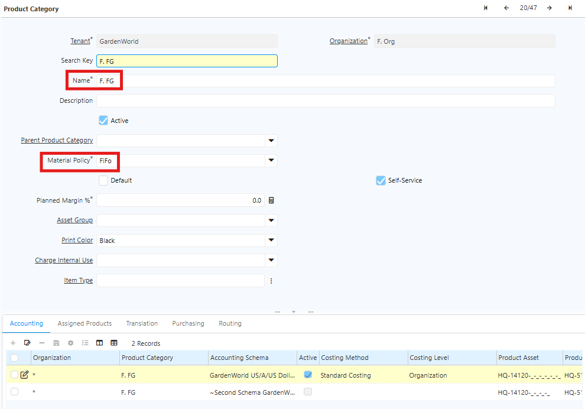
- Masuk ke tab Accounting
- Klik Accounting Schema
- Pilih Costing Method dan Costing Level sesuai kebijakan perusahaan

- Klik Save
Implementasi Penggunaan Costing
Finished Goods & Semi Finished Goods
Tim PSI merekomendasikan penggunaan Standard Costing untuk Finished Goods dan Semi Finished Goods. Metode ini:
- Sudah menjadi praktik umum di sistem manufaktur
- Mengacu pada blueprint costing perusahaan
- Membantu menjaga akurasi laporan keuangan
- Mempermudah kontrol dan evaluasi biaya produksi
Raw Material
Tim PSI merekomendasikan penggunaan Average Cost untuk Raw Material.
Metode ini dinilai cukup karena perubahan harga bahan baku biasanya tidak menghasilkan selisih biaya yang signifikan.
Sub-Contracting
Proses subcontracting dapat menggunakan:
- Standard Costing
- Average Costing
Pemilihan metode mengikuti kebijakan perusahaan. Pada proses subcontracting:
- Sistem akan membuat movement dari warehouse internal ke warehouse subcontractor.
- Sistem juga akan membuat jurnal internal use secara otomatis di belakang proses transaksi.
Tujuan Penggunaan Standar Costing
Penggunaan Standard Costing membantu perusahaan:
- Mengendalikan koreksi HPP atau costing
- Mengurangi kesalahan operasional
- Mempermudah proses monitoring biaya
Dengan minimnya koreksi costing, perusahaan dapat menyusun laporan keuangan dalam kurun waktu yang lebih cepat dan lebih stabil.
Cost Adjustment
Cost Adjustment adalah proses penyesuaian nilai valuasi produk atau barang yang sudah tercatat di sistem. Penyesuaian ini dilakukan karena:
- Perbedaan harga
- Kesalahan pencatatan sebelumnya
Cost Adjustment tidak melakukan revaluasi terhadap transaksi historis. Sistem hanya akan menggunakan nilai cost baru untuk transaksi berjalan dan transaksi berikutnya.
Ketentuan Costing Method
Costing Method tidak boleh diubah setelah digunakan dalam transaksi. Pembatasan ini bertujuan untuk:
- Menjaga konsistensi data
- Menjaga integritas transaksi
- Menghindari ketidaksesuaian laporan costing
Jika perusahaan perlu menggunakan costing method yang berbeda, buat product atau article baru lalu arahkan ke Product Category yang sesuai.
Langkah Cost Adjustment di Sistem
Ikuti langkah berikut untuk melakukan Cost Adjustment:
- Buka menu Cost Adjustment
- Klik New
- Pilih Costing Method pada produk
- Pilih Movement Date
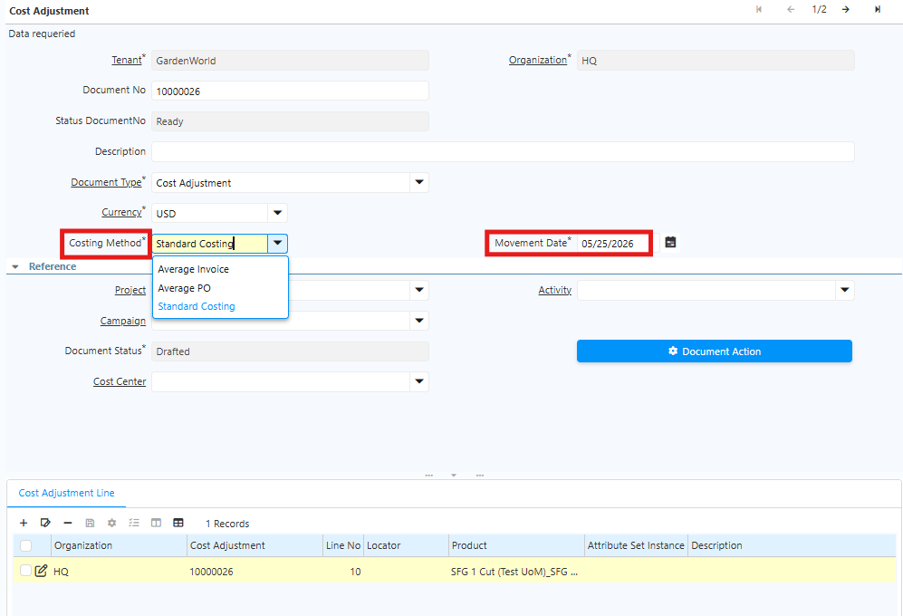
- Masuk ke tab Cost Adjustment Line
- Pilih produk yang akan disesuaikan
- Input nilai harga baru pada field New Cost Price
- Input Charge
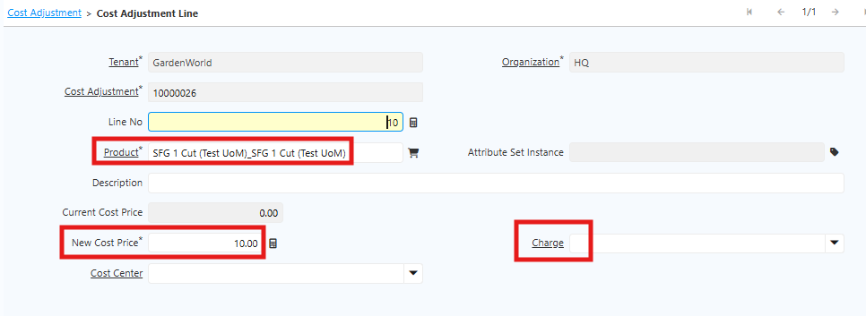
- Klik save
- Klik complete
Cost Adjustment pada Batch/Lot
Jika terjadi kesalahan harga pada level Batch atau Lot, lakukan penyesuaian cost average per Batch atau Lot.
Sistem akan menghitung harga rata-rata berdasarkan harga beli material terakhir pada masing-masing Batch atau Lot
Metode ini membantu menjaga akurasi nilai persediaan pada setiap Batch atau Lot.
Penanganan Kesalahan Harga pada Purchase Order
Jika terdapat kesalahan harga pada material yang sudah diproses melalui Purchase Order, perusahaan dapat menyelesaikannya menggunakan:
- Credit Note
- Return Material
Proses penyelesaian mengikuti kebijakan perusahaan.
- Jika perusahaan menggunakan Credit Note, tim accounting menentukan akun yang digunakan untuk penyesuaian.
- Jika stock masih tersedia, lakukan proses return material kepada vendor
- Jika material sudah digunakan dalam proses produksi, lakukan adjustment minus untuk menambah stok sesuai kondisi existing saat ini
Proses ini membantu menjaga kesesuaian nilai costing dan persediaan di sistem.
Purchase Price Contract
Purchase Price Contract adalah mekanisme untuk menetapkan harga pembelian yang telah disepakati antara perusahaan dan Business Partner (vendor) untuk produk tertentu dalam periode waktu tertentu.
Mekanisme ini membantu perusahaan:
- Menjaga konsistensi harga pembelian
- Mengontrol harga sesuai perjanjian
- Menghindari perubahan harga pasar yang tidak sesuai kontrak
Konfigurasi Awal Purchase Price Contract
Sebelum membuat Purchase Price Contract, lakukan konfigurasi ICPL terlebih dahulu:
- Setup Price List di ICPL.
- Tentukan price list produk yang akan digunakan untuk setiap Business Partner.
- Pastikan setiap Business Partner sudah memiliki konfigurasi ICPL sebelum proses Purchase Price Contract dijalankan.
ICPL menjadi dasar harga yang digunakan dalam Purchase Price Contract.
Langkah Pembuatan Purchase Price Contract
Ikuti langkah berikut untuk membuat Purchase Price Contract:
- Buka menu SIS Purchase Price Contract
- Input nama Business Partner
- Input Valid From dan Valid To - tentukan periode waktu kontrak berjalan

Masuk ke tab SIS Purchase Price Contract Line
Input Produk, Harga Produk dan Quantity Produk

- Klik complete
Setelah dokumen di-complete, sistem akan menjalankan beberapa proses otomatis:
- Sistem membuat ICPL Update dengan status Complete pada ICPL yang sudah di-setting di Business Partner.
- Sistem mengacu pada data valid from, product dan price yang terdapat pada Price Contract Line
- Sistem memperbarui data Purchase Price List berdasarkan price list pada ICPL Base.
- Sistem memperbarui data ICPL sesuai data pada SIS Purchase Price Contract.
Realisasi di Purchase Order
Sebelum Purchase Order di-complete, pastikan data berikut sesuai dengan Purchase Price Contract:
- Business Partner pada PO sama dengan Business Partner pada Purchase Price Contract.
- Product pada PO sama dengan product pada Price Contract Line.
- Tanggal pembelian masih berada dalam periode kontrak:
- Valid From
- Valid To
- Warehouse penerimaan sesuai dengan warehouse pada Purchase Price Contract
Setelah Purchase Order di-complete, sistem akan menjalankan proses berikut:
- Sistem membuat PO Line yang sesuai dengan Price Contract Line.
- Sistem memperbarui nilai:
- Qty Realization
- Total Contract Realization
Update ini membantu perusahaan memonitor realisasi pembelian terhadap kontrak yang sudah disepakati.
Manajemen Asset
Manajemen Penyusutan dan Disposal Asset
Penyusutan asset adalah proses mengalokasikan biaya asset secara sistematis selama masa manfaatnya. Setiap periode, sistem mencatat beban penyusutan dan mengurangi nilai buku asset. Sebelum melakukan penyusutan, pastikan konfigurasi berikut telah selesai:
- Product Category — Gunakan costing method Average PO dan costing level Batch/Lot.
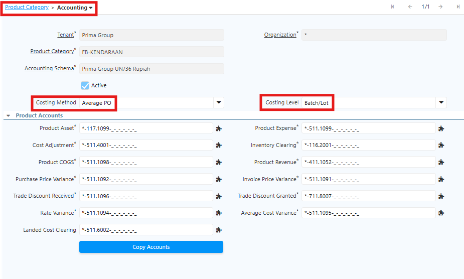
- Attribute Set — Pilih Lot Control dengan pengaturan berikut:
Mandatory Type: Always
Attribute Set Type: Material Management System
Exclude:
- C_OrderLine – Sales Order Line
- M_InOutLine – Shipment/Receipt Line
Un-check field Sales Transaction

- Master Data Asset Type — Tentukan klasifikasi asset, metode penyusutan, dan GL Document Type.
- Set Product — Atur Product Type ke Item.
- Attribute Set — Sesuaikan dengan kategori asset.
- Asset Type — Sesuaikan dengan kategori asset.
Proses Pengadaan Asset
Pengadaan asset dilakukan melalui tahapan berikut:
- Purchase order
- Material receipt
- Invoice
- Matching invoicee
Setelah proses penerimaan selesai, sistem otomatis membentuk data asset berdasarkan ASI (Attribute Set Instance). Data asset tersebut dapat diakses melalui menu SIS Asset.
Proses Manajemen Penyusutan Asset
Lakukan penyusutan asset melalui langkah-langkah berikut:
- Akses menu SIS Asset.

- Generate asset — Data awal akan berstatus Draft.
- Evaluasi asset — Lakukan evaluasi terhadap asset yang berstatus Draft.
- Konfirmasi asset — Validasi asset sebelum digunakan.
- Sistem menampilkan:
- Daftar asset berdasarkan ASI
- Proposal depresiasi sesuai masa manfaat asset
- Penyusutan berjalan sesuai konfigurasi Asset Type.
Jurnal penyusutan di-generate secara otomatis, berdasarkan permintaan user atau jadwal automation scheduler yang berjalan setiap bulan.
Mekanisme Penyusutan Asset
Penyusutan asset bekerja dengan ketentuan berikut:
- Dasar penyusutan menggunakan harga perolehan (harga beli).
- Penentuan batch/lot dilakukan saat penerimaan barang.
- Setiap penerimaan dicatat berdasarkan batch/lot dan mereferensikan dokumen pembelian terkait.
- Penyusutan mengikuti harga Purchase Order, sedangkan nilai disposal dapat disesuaikan dengan kebutuhan bisnis.
Disposal Asset
Disposal adalah proses penghapusan asset dari catatan perusahaan secara permanen. Disposal dilakukan ketika asset sudah tidak layak pakai, dijual, dihibahkan, atau dihancurkan.
Disposal asset dapat dilakukan melalui dua mekanisme:
- Sales order
- Buka menu Sales Order, pastikan Document Type menggunakan Standard Order.
- Pilih asset berdasarkan ASI yang sesuai.
- Proses Shipment, lalu buat Invoice Customer (AR).

- Physical Inventory (Internal Use)
- Buka menu Inventory Decrease/Increase.
- Pilih Document Type Internal Use Inventory.
- Masuk ke Internal Use Line.
- Pilih asset yang akan didisposal berdasarkan ASI.
- Tentukan Charge sebagai beban disposal

Setelah proses disposal selesai — baik melalui Sales Order maupun Internal Use — sistem otomatis memperbarui status disposal pada data asset dan men-generate jurnal disposal.
Pergerakan dan Pengelolaan asset
- Perpindahan asset antar lokasi memengaruhi pencatatan penyusutan
- Penyusutan dapat disesuaikan berdasarkan lokasi atau outlet tempat asset berada.
- Asset yang belum digunakan (misalnya masih di gudang) tidak langsung disusutkan. Penyusutan baru dimulai saat asset mulai digunakan di outlet.
Stock Opname Charging
Stock opname charging adalah proses perhitungan dan verifikasi fisik stock material charging — yaitu bahan atau komponen yang digunakan dalam proses produksi. Hasil perhitungan fisik kemudian disesuaikan dengan data yang ada di sistem.
Tipe Charging untuk Stock Opname
Di SCI, terdapat 4 tipe charging untuk stock opname:
Tipe 1 — Stock Opname Charge Induk Non UoM
- Sistem merangkum (summary) selisih quantity per category charge.
- Sub category charge membedakan harga di masing-masing sub category.
- Pastikan konfigurasi sub category charge sesuai ketentuan: harga tertinggi dalam category yang sama harus memiliki sequence terkecil.
- Set charge multiply rate pada artikel yang memiliki faktor pengali
Tipe 2 — Stock Opname Charge Induk dengan UoM
- Category charge mereferensikan UoM yang digunakan untuk konversi dalam kelompok kategori. UoM yang digunakan adalah UoM terbesar dalam kelompok tersebut.
- Artikel dengan Base UoM yang berbeda dari UoM referensi di category charge harus memiliki UoM Conversion ke UoM referensi tersebut.
Tipe 3 — Stock Opname Charge Asosiasi Berdasarkan Bill of Material (BoM)
- Category charge mereferensikan Bill of Material yang diasosiasikan ke masing-masing artikel dalam BoM tertentu untuk perhitungan charge.
- Konfigurasi sequence harus mengikuti urutan berikut: Raw Material → Barang Jual → Barang Kemas.
Tipe 4 — Stock Opname Charge Minus Mutlak Berdasarkan Kategori
- Category charge dibedakan menjadi dua: Dibebankan dan Tidak Dibebankan.
- Konfigurasi sequence harus mengikuti urutan berikut: Charge → Non Charge.
Tipe 5 — Stock Opname Charge Khusus Brand (PPG). Tipe ini adalah tipe charging khusus untuk Brand yang diterapkan untuk tim PPG. Mekanisme perhitungannya adalah sebagai berikut:
- Perhitungan 1 — Jumlahkan seluruh selisih Total Bruto (ICPL). Nilai bruto diambil dari ICPL.
- Perhitungan 2 — Kurangi hasil perhitungan 1 dengan Total Bruto tertinggi.
- Perhitungan 3 — Kalikan hasil perhitungan 2 dengan 50% untuk menentukan varian selisih.
- Perhitungan 4 — Jika hasil perhitungan 3 bernilai minus (negatif), tambahkan Total Netto tertinggi. Jika bernilai positif, penambahan Total Netto tertinggi tidak diperlukan.
- Nilai hilang barang diambil dari Total Netto tertinggi.
Konfigurasi API
Konfigurasi API ini bertujuan untuk mengambil data harga netto produk yang digunakan dalam stock opname, bersumber dari aplikasi Sky. Ikuti langkah berikut untuk melakukan konfigurasi API di System Configurator:
- Buka menu System Configurator
- Klik New
- Input nama configurator: SIS_BASEURI_SERVICE_INVENTORY
- Pada field Configured Value, input: http://localhost:8019
- Klik save
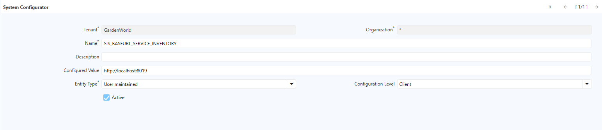
Setelah konfigurasi selesai, sistem akan menampilkan data harga netto produk melalui API di tab SIS Inventory Charge Log setiap kali stock opname charging dijalankan. Jika produk tidak memiliki harga netto, sistem otomatis menggunakan harga default sebesar 75% dari ICPL.
Proses Stock Opname di Sistem
Ikuti langkah-langkah berikut untuk membuat dokumen stock opname:
- Buka menu Physical Inventory
- Klik New
- Input Warehouse yang akan diopname
- Input Movement Date — masukkan tanggal pelaksanaan opname

- Klik Save
- Masuk ke tab Inventory Count Line
- Klik New
- Input Produk Charging yang akan dihitung
- Input Locator — pilih lokasi penyimpanan produk
- Input Quantity Count — masukkan jumlah fisik hasil perhitungan aktual
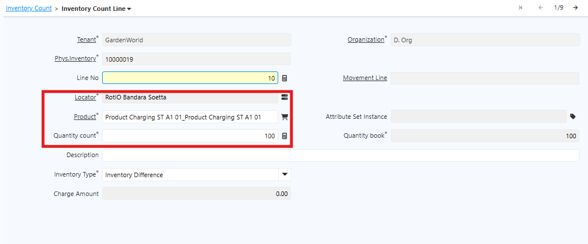
11. Sistem otomatis menampilkan Quantity Book
- Ulangi langkah 7-11 untuk setiap produk
- Klik Save
- Jalankan SIS Generate Inventory Charge Amount — sistem menghitung dan menampilkan kalkulasi charge amount untuk seluruh produk.
- Klik Complete
Contract Management
Contract Management digunakan untuk dua keperluan utama:
- Mencatat jadwal penerbitan AP Invoice untuk biaya yang sudah pasti dalam periode tertentu, sesuai dokumen kontrak dengan pihak ketiga.
- Membuat jadwal amortisasi otomatis untuk biaya yang bersifat recurring selama periode tertentu.
Sebelum memulai transaksi Contract Management, siapkan master data berikut:
- Cost Center (outlet/showroom/plant)
- Project (opsional)
Langkah Akses Contract Management di Sistem
Ikuti langkah berikut untuk mengakses Contract Management di iDempiere:
- Buka menu SIS Contract Management
- Isi field pada Header:
- Period Type — Pilih Year (Tahun) atau Month (Bulan).
- Cost Center — Isi sesuai outlet atau showroom.
- Tax — Isi pajak yang akan digunakan.
- Business Partner — Isi rekanan yang bekerja sama dalam kontrak.
- Project — Opsional, isi jika terkait pekerjaan pembangunan outlet atau showroom.
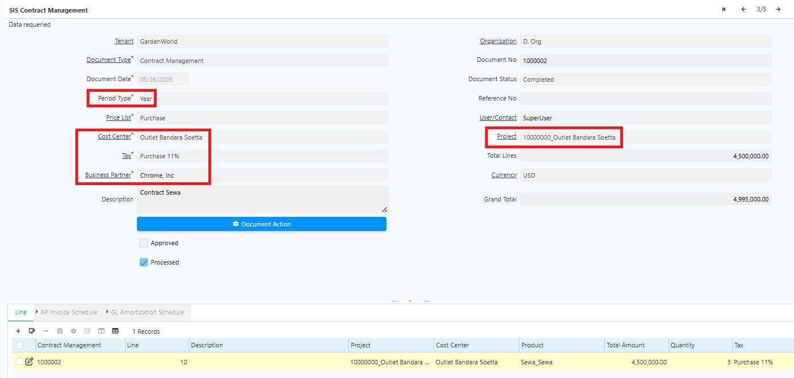
- Masuk ke tab Contract Management Line. Isi field berikut:
- Product — Isi dengan produk biaya.
- Debit Account — Isi akun debit untuk amortisasi.
- Credit Account — Isi akun kredit untuk amortisasi.
- Down Payment — Isi jika terdapat mekanisme DP.
- Quantity — Isi jumlah periode kontrak (mengikuti Period Type di header: Year/Month).
- Total Amount — Isi nilai kontrak sebelum pajak.
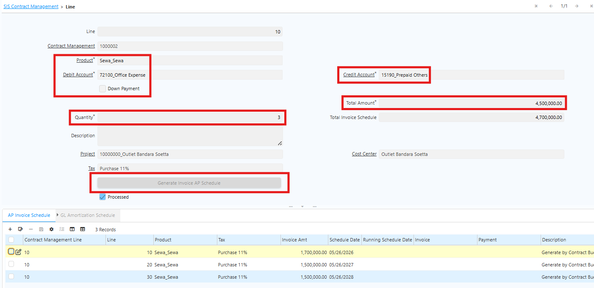
- Jalankan Generate Invoice AP Schedule untuk membuat jadwal AP Invoice. Secara default, sistem mengikuti amount dan quantity pada line. Qty dan Amount dapat diubah selama total amount di schedule tetap sama dengan amount di line.
- Hasil generate akan muncul di tab AP Invoice Schedule.
- Masuk ke tab AP Invoice Schedule. Berikut field yang tersedia:
- Schedule Date — Tanggal generate AP Invoice (Complete).
- Running Schedule Date — Informasi eksekusi schedule.
- Invoice — Dokumen AP Invoice yang ter-generate.
- Payment — Dokumen payment dari AP Invoice.
- Down Payment — Invoice Down Payment.
- Invoice Paid — Status pembayaran invoice.
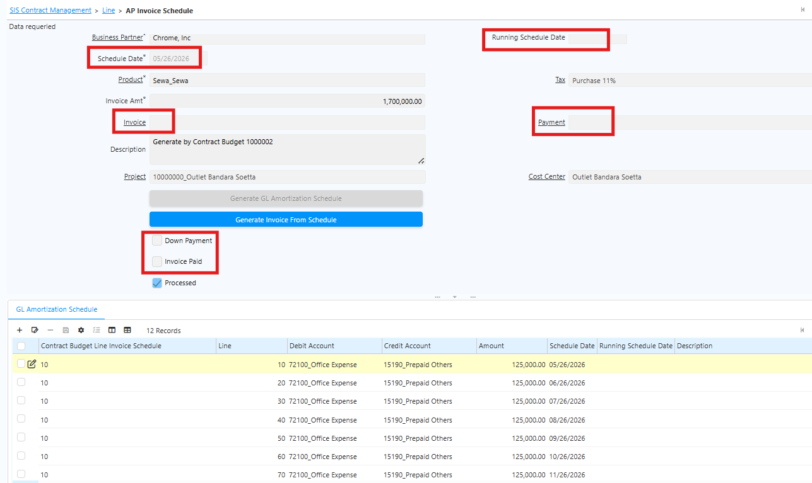
- Jalankan Generate GL Amortization Schedule untuk membuat jadwal amortisasi bulanan.
- Hasil generate akan muncul di tab GL Amortization Schedule.
- Masuk ke tab GL Amortization Schedule. Berikut field yang tersedia:
- Schedule Date — Tanggal generate GL Journal (Complete).
- Journal — Dokumen GL Journal yang ter-generate.
- Debit Account — Akun debit GL Journal.
- Credit Account — Akun kredit GL Journal.
- Amount — Nominal debit dan kredit yang akan terjurnal di GL Journal.
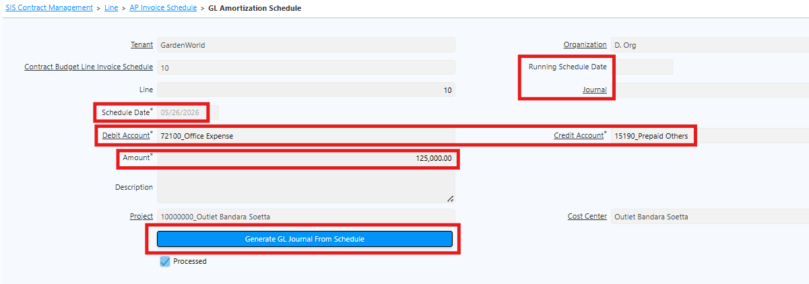
- Jalankan Generate GL Journal From Schedule untuk men-generate GL Journal dengan status Complete.
- Generate Invoice From Schedule untuk men-generate AP Invoice secara manual di luar jadwal yang telah dikonfigurasi.
Report Stock per Warehouse
Laporan ini menampilkan posisi stok yang dikelompokkan berdasarkan gudang (warehouse). Gunakan laporan ini untuk memantau distribusi fisik barang di setiap lokasi penyimpanan dan memastikan ketersediaan stok di masing-masing gudang.
Akses Laporan Stock per Warehouse di Sistem
Ikuti langkah berikut untuk mengakses Report Stock per Warehouse di iDempiere:
- Buka menu SIS Report Stock
- Input tanggal pelaporan dan Locator.
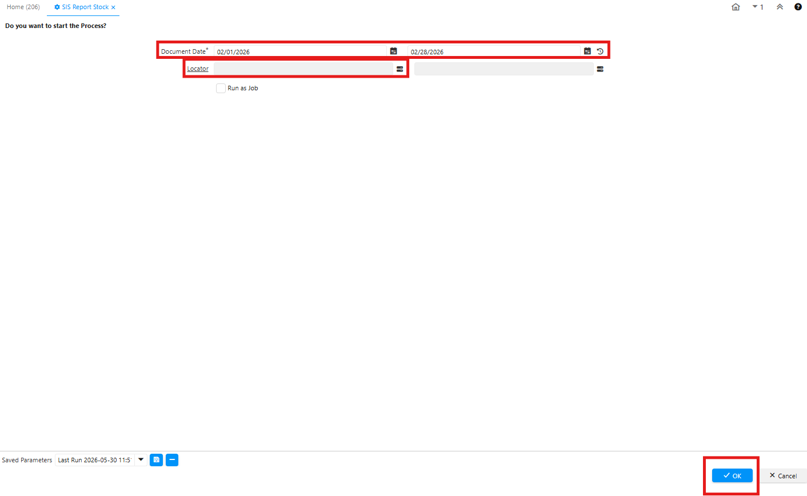
- Klik Ok
- Sistem menampilkan Report Stock dalam format Excel.
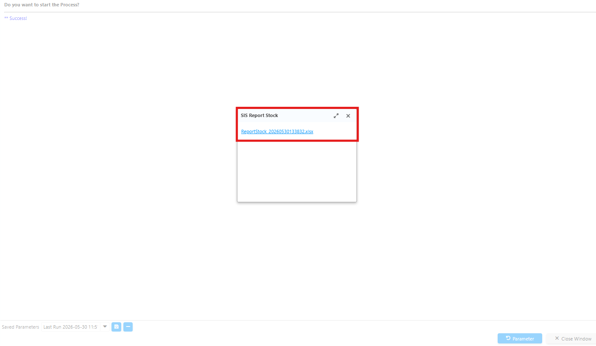
Contoh Report Stock per Warehouse
Report Stock per Artikel
Laporan ini menampilkan posisi stok yang dikelompokkan berdasarkan produk/artikel. Berbeda dengan laporan per warehouse yang berfokus ke lokasi, laporan ini merangkum total stok suatu produk dari semua (atau warehouse tertentu), lengkap dengan nilai dan status replenishment-nya.
Akses Laporan Stock per Artikel di Sistem
Ikuti langkah berikut untuk mengakses Report Stock per Artikel di iDempiere:
- Buka menu SIS Report Stock per Artikel
- Input tanggal pelaporan, Locator & Product.

- Klik Ok
- Sistem menampilkan Report Stock dalam format Excel.
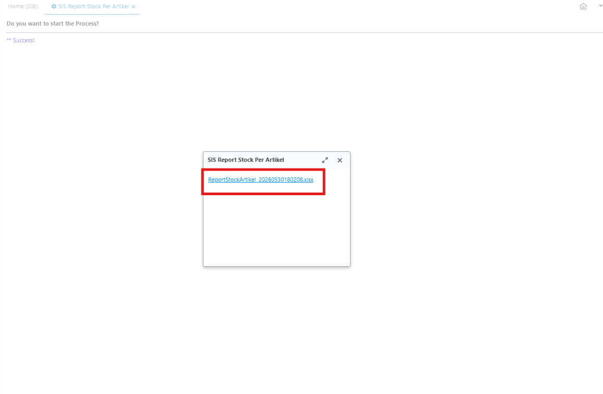
Contoh Report Stock per Artikel
Posting Matched Invoice
Sebelum melakukan posting jurnal matched invoice, lakukan konfigurasi Scheduler terlebih dahulu. Ikuti langkah berikut:
- Buka menu Scheduler.
- Klik New.
- Input nama: "SIS Auto Reposting Matched Invoice”.
- Pada field Process, pilih "SIS Auto Reposting Match Invoice_SIS Auto Reposting Match Invoice”.
- Pada field Schedule, pilih "1 Minutes SIS”.
- Pada field Supervisor, input sesuai kebutuhan.
- Pada field Days to Keep Log, pilih "1” — nilai ini menentukan jumlah hari log yang akan disimpan.
- Klik Save.
- Klik Not Schedule.

Konfigurasi scheduler ini diperlukan karena jurnal matched invoice dapat mengalami posting error akibat pengaturan auto invoice di document type. Dengan scheduler ini, sistem akan otomatis melakukan reposting jurnal sesuai jadwal yang dikonfigurasi. Meskipun posting error muncul, sistem tetap mencatat jurnal matched invoice di latar belakang.
Tab Log akan diperbarui setiap satu menit sesuai konfigurasi. Sistem secara berkala menjalankan proses reposting matched invoice di latar belakang. Setelah jurnal berhasil ter-posting, log tetap berjalan selama periode yang ditentukan di Days to Keep Log.
Attribute Set
Attribute Set adalah fitur yang memungkinkan pencatatan atribut tambahan pada produk di level lot, serial number, atau batch. Fitur ini sangat berguna untuk produk yang memerlukan pelacakan kualitas, tanggal kedaluwarsa, atau identifikasi individual.
Komponen Attribute Set
- Lot — Pengelompokan produk dalam satu batch produksi atau pengiriman. Produk dengan lot yang sama dianggap memiliki karakteristik yang sama.memiliki karakteristik yang sama.
- Lot Control — Format dan urutan penomoran lot yang dibuat sistem secara konsisten. Tanpa Lot Control, operator harus mengetik nomor lot secara manual setiap kali menerima barang — rentan typo, tidak seragam, dan sulit dianalisis.
- Guarantee Date — Tanggal sampai kapan produk dijamin kualitasnya (tanggal kedaluwarsa/best before). Atribut ini paling kritis untuk produk pangan, farmasi, dan bahan kimia.
Fungsi Guarantee Date
Guarantee Date digunakan untuk:
- Mencatat tanggal kedaluwarsa produk saat penerimaan barang.
- Menjadi dasar perhitungan otomatis melalui Guarantee Days yang dikonfigurasi di level Product.
- Menjadi basis peringatan jika stok mendekati tanggal kedaluwarsa.
Implementasi Attribute Set
Konfigurasi Master Data Attribute Set
- Buka menu Attribute Set
- Centang field Lot
- Centang field Guarantee Date
- Centang field Instance Attribute
- Centang field Mandatory Guarantee Date
- Pada field Mandatory Type, pilih Always Mandatory
- Pada field Attribute Set Type, pilih Material Management System

- Masuk ke tab Exclude, input data berikut:
- C_OrderLine – Sales Order Line
- M_InOutLine – Shipment/Receipt Line
- M_MovementLine_Move Line
- Un-check field Sales Transaction
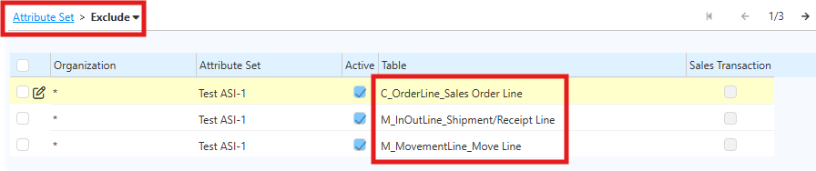
Exclude - Klik Save
Setup Attribute Set Instance di Produk
- Buka Menu Product
- Input field-field sesuai kebutuhan
- Pada field Attribute Set, pilih ASI yang konfigurasi
- Klik Save
Purchase Order & Penerimaan Barang
- Buka menu Purchase Order
- Input field-field mandatory
- Masuk ke tab PO Line, input produk dan quantity produk yang akan diproses
- Klik Complete
- Masuk ke tab Material Receipt, lalu masuk ke Receipt Line
- Pada tab Attributes, buat Attribute Set Instance (ASI) dan isi Guarantee Date sesuai konfigurasi.

- Klik save
- Klik complete dokumen material receipt
Pada report Material Receipt, sistem menampilkan expired date yang merupakan Guarantee Date untuk masing-masing produk dan ASI.